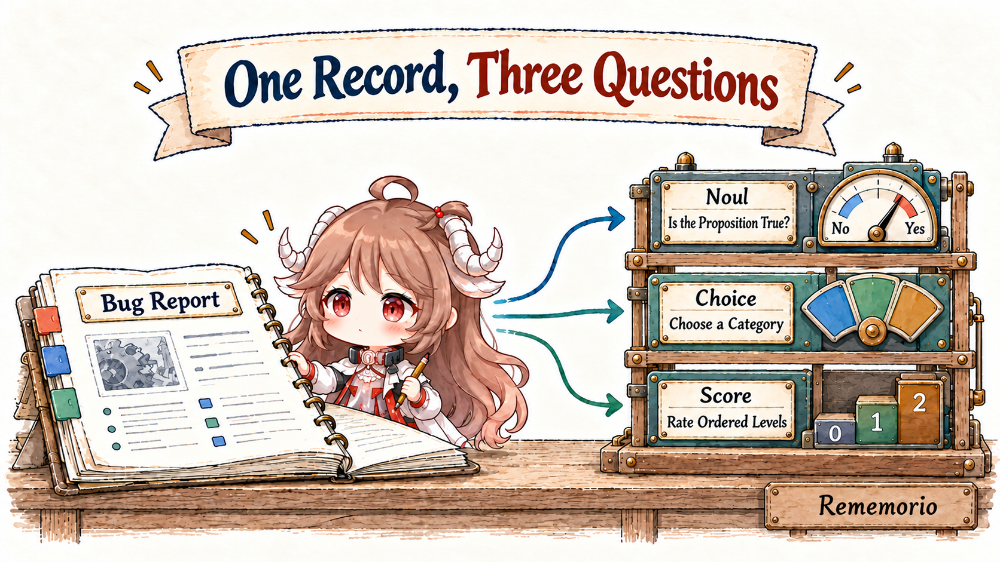
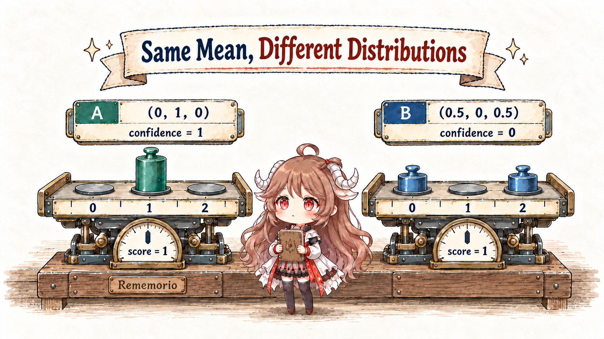
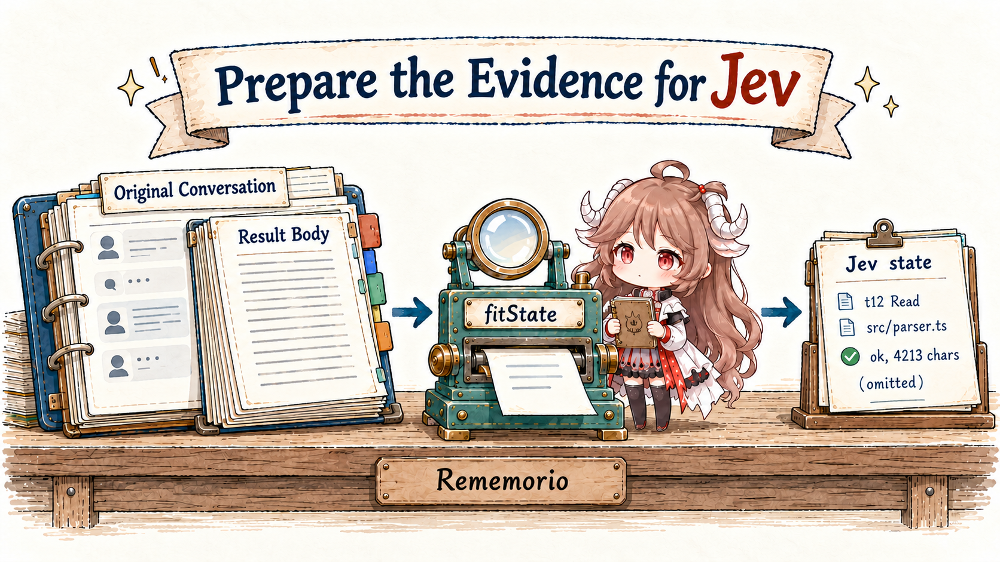
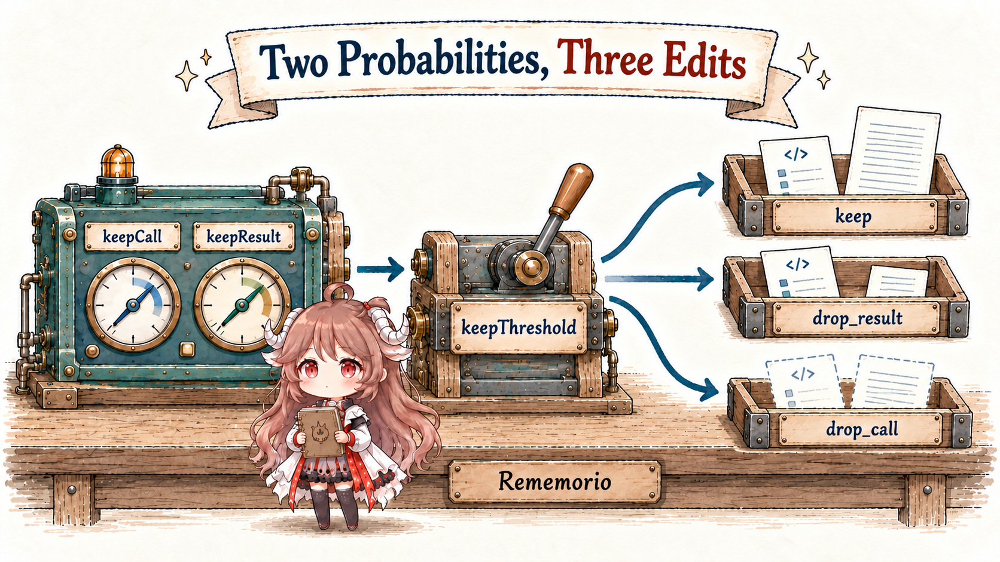

A checkout page occasionally times out. Refreshing lets the customer finish, and the order service has found no duplicate orders. The report is ready, but the application still has decisions to make: does it contain reproducible steps, who should investigate, and how severe is the impact? Each decision requires understanding text, and each has a defined answer space.
Jev exposes these small judgments through a model API. An application supplies evidence and questions, receives typed answers with probabilities, and uses code to choose an action. That division of work makes fast-jev-compaction an interesting example: it asks Jev which tool records still matter in a growing agent conversation, then edits the history according to those answers.
Reading route: use one bug report to understand Noul, Choice, and Score; calculate probabilities, confidence, and thresholds; then follow a tool record through state construction, batched judgments, history reconstruction, and fallback. The final question is practical: how do we decide whether the saved context is worth the lost information?
API definitions were checked against TypeSafe documentation on October 23, 2026. Plugin behavior follows the public source snapshot pinned in the links. The bug report, numerical examples, and evaluation plan are teaching examples; the probabilities shown here were not obtained from live inference. Training discussion is limited to the objectives and contracts published by TypeSafe.
1. Define the judgments before calling the model
1.1 One record can support several questions
The application needs the symptom, the available evidence, and the facts still missing. We will carry this record through the first three sections:
Symptom: mobile checkout occasionally times out.
Steps: open the cart and select checkout; roughly one in ten attempts times out.
Workaround: refresh and try again.
Checked: the order service has found no duplicate orders.
Missing: correlated client and server logs from a failed attempt.This material becomes the request's state, supplied as a string, object, or array. The questions describe what to judge about it. Separating evidence from questions lets the same record support several judgments, and lets us compare revised criteria against unchanged examples.
Every question has an application-defined ID, and the answer returns under that ID. According to the documentation, IDs are used for matching requests to responses and are not sent to the model. The complete judgment belongs in instructions. Naming an ID has_reproduction_steps while asking only “check this” leaves the intended condition out of the actual question.

1.2 Noul: the probability that a proposition is true
Start with a small question: “Does the report provide a concrete sequence of actions to reproduce the issue?” A Noul returns a number p, the probability of yes. An illustrative value of 0.92 leaves probability 0.08 for no. Together they describe the binary distribution.
{
"type": "noul",
"instructions": "Does the report provide a concrete sequence of reproduction steps?",
"criteria": {
"true": "Gives a specific sequence of actions that triggers the issue.",
"false": "Describes symptoms without a specific sequence of actions."
}
}Noul's optional criteria clarify what counts as a reproduction sequence. The report's “one in ten” describes observed failure frequency. The model's 0.92 describes its judgment that the report contains steps. To measure the failure rate, count execution outcomes; use this question to assess the text's description of the procedure.
A value near 0.5 puts similar probability on both answers. The application can send a middle range for further investigation, or choose a single threshold based on the cost of mistakes. A Noul response carries noul alone, without a separate confidence field.
1.3 Choice: distribute probability across named alternatives
Next, decide who should investigate. Frontend, backend, and further investigation are unordered alternatives, so they fit Choice. The application supplies names and descriptions in criteria. The response includes the highest-probability option and the full distribution.
{
"type": "choice",
"instructions": "Who should investigate next, given the available evidence?",
"criteria": {
"frontend": "The evidence locates the problem in the client.",
"backend": "The evidence locates the problem in the server.",
"investigate": "The evidence is insufficient to locate it; gather more."
}
}Suppose the distribution is frontend: 0.15, backend: 0.10, and investigate: 0.75. Then choice is investigate, and the application can schedule collection of correlated logs. An explicit investigation option gives incomplete evidence a useful destination. Offering only frontend and backend requires all probability to be allocated to those two candidates.
Option names and descriptions define the answer space. Changing a category's meaning, or adding a category, changes the classification task. Record the rule version with the answer so that a later investigation can explain why the same report reached a different team.
1.4 Score: express a judgment along ordered levels
For impact, define three levels: cosmetic, degraded functionality with a workaround, and blocked core functionality without a workaround. Score defines these through an ordered criteria array, indexed from 0. The model assigns probability to each level; score is the weighted mean of their indices.
{
"type": "score",
"instructions": "How much functional impact does the report describe?",
"criteria": [
"Cosmetic issue; functionality works.",
"Degraded functionality with a usable workaround.",
"Core functionality blocked with no usable workaround."
]
}For illustrative probabilities (0, 0.8, 0.2), score = 0×0 + 1×0.8 + 2×0.2 = 1.2. The judgment leans toward level 1 while retaining some probability on level 2. The numeric spacing comes from array positions. Monetary damage or downtime in minutes requires the corresponding facts and calculation rules.
Levels should follow one dimension. “High impact,” “easy to fix,” and “urgent customer” describe three dimensions; ask separate questions and define priority in application code. A clear rubric gives both the returned numbers and subsequent actions a stable meaning.
2. Read probabilities, scores, and confidence separately
2.1 Recompute Choice confidence from the distribution
A Choice's probabilities retain the alternatives, and choice selects the largest one. The documented confidence formula normalizes how far that largest probability sits above an even split:
n = number of options; p_max = largest probability
confidence = (p_max - 1/n) / (1 - 1/n)
Three options, largest probability 0.75:
confidence = (0.75 - 1/3) / (1 - 1/3) = 0.625We now have three values that can be inspected separately: the option investigate, its probability 0.75, and confidence 0.625. Confidence is calculated from the existing distribution. With two options and the same largest probability of 0.75, the formula gives 0.5; adding options therefore calls for a fresh check of application thresholds.
Only the largest probability and option count enter this formula. Distributions (0.6, 0.3, 0.1) and (0.6, 0.2, 0.2) both yield confidence 0.4. An application concerned with the lead over the runner-up can compute that gap from the full distribution. The useful statistic depends on the error the program needs to prevent.
2.2 Preserve where Score probability is located
Consider two distributions over levels 0, 1, and 2. A is (0, 1, 0); B is (0.5, 0, 0.5). Both have mean 1. A places all probability on moderate impact, while B splits it between opposite ends. Saving only the mean discards that difference.

Score confidence considers distance from the most likely level, penalizing probability further away more strongly. The documented formula gives A confidence 1 and B confidence 0. Our earlier bug example, (0, 0.8, 0.2), yields score = 1.2 and confidence = 0.7.
Calculate Score confidence from a distribution
n = number of levels; i = level index; p_i = level probability
m = most likely level
D = Σ p_i × |i - m|
U = (1/n) × Σ |i - (n - 1)/2|
confidence = max(0, 1 - D/U)
Three-level distribution (0, 0.8, 0.2):
m = 1; D = 0.2; U = 2/3
confidence = 1 - 0.2/(2/3) = 0.7D measures average distance from the most likely level. U supplies a distance scale for an even distribution. An application may also read the probability of a particular high-impact level directly, keeping the full distribution for later inspection.
2.3 Check calibration against observed outcomes
Collect predictions for “contains reproduction steps,” group those near 0.8, and check them against independent labels. If roughly eight out of ten really contain steps, the predictions show calibration in that group. Calibration research studies this correspondence between predicted probabilities and empirical frequency. Record sample counts too: eight positives among ten reports and eight hundred among a thousand have different statistical stability.
TypeSafe calls its training objective RLCD, reinforcement learning for calibrated decisions. An integration can directly inspect question types, output distributions, and derived formulas. It must also measure errors under its own language, input lengths, and task distribution. The official State documentation notes a primarily English training language and lower accuracy in other languages. Include Chinese tasks when evaluating a Chinese application.
2.4 Thresholds express the application's error costs
To connect this to context pruning, let p be the probability that a tool result still needs to be kept. Consider a simplified decision model: an unnecessary retention costs C_extra; deleting useful information costs C_loss; correct decisions have zero cost. Expected loss from keeping is (1−p)×C_extra; expected loss from deleting is p×C_loss.
Choose retention when:
p ≥ C_extra / (C_extra + C_loss)
Illustrative costs: unnecessary retention = 1, harmful deletion = 19
Retention threshold = 1 / 20 = 0.05Asymmetric losses can justify a threshold far from 0.5. Real systems also have budgets, reread latency, and dependencies between records. Define those costs, then choose thresholds using held-out examples. The plugin below uses a default of 0.5; that is its implementation choice.
3. Put several judgments into one API call
3.1 State, questions, and answers form one round trip
The bug workflow has four steps: assemble the report; ask about reproduction steps, ownership, and impact; receive the answers; then schedule investigation or assignment in code. This teaching request preserves the actual field structure of POST /v1/systemone:
{
"model": "jev-1.13.0",
"state": {
"symptom": "Mobile checkout sometimes times out; refreshing allows completion.",
"steps": "Open cart, select checkout; roughly one in ten attempts times out.",
"evidence": "No duplicate orders found; correlated failure logs are missing."
},
"questions": {
"repro": {
"type": "noul",
"instructions": "Does the report provide a specific sequence of reproduction steps?"
},
"owner": {
"type": "choice",
"instructions": "Who should investigate next, given the available evidence?",
"criteria": {
"frontend": "Evidence locates the problem in the client.",
"backend": "Evidence locates the problem in the server.",
"investigate": "Evidence is insufficient; gather more."
}
},
"impact": {
"type": "score",
"instructions": "How much functional impact does the report describe?",
"criteria": ["Cosmetic issue.", "Degraded but a workaround exists.", "Core blocked, no workaround."]
}
}
}The illustrative response below omits surrounding fields such as usage. Score's legend maps each level index back to its description.
{
"answers": {
"repro": { "type": "noul", "noul": 0.92 },
"owner": {
"type": "choice",
"choice": "investigate",
"probabilities": { "frontend": 0.15, "backend": 0.10, "investigate": 0.75 },
"confidence": 0.625
},
"impact": {
"type": "score",
"score": 1.2,
"probabilities": { "0": 0, "1": 0.8, "2": 0.2 },
"legend": { "0": "Cosmetic issue.", "1": "Degraded but a workaround exists.", "2": "Core blocked, no workaround." },
"confidence": 0.7
}
}
}On investigate, the application can create a log-collection task and keep the impact judgment for prioritization. The answer about reproduction steps describes the report. Actually confirming reproduction still requires executing those steps and recording the outcome.
3.2 Shared evidence, application-managed dependencies
The batching contract says each question independently reads the shared state and is evaluated in parallel. An application can ask speculative questions together, then ignore irrelevant answers. A question that requires newly obtained information from an earlier answer needs a subsequent request.
This fits screening tool history: each candidate can be judged against the current task. The caller still needs to check that all answer IDs arrived, values are finite and within range, and the request succeeded. Interface shape, semantic accuracy, and runtime failure handling belong to distinct parts of the integration.
4. How fast-jev chooses tool history to retain
4.1 From fixing a test to triggering compaction
Follow a coding agent that reads a file, runs a failing test, edits a parser, reruns the tests, and starts a changelog entry. Its history contains old file contents, failure logs, edit arguments, and the latest successful output. Which evidence should remain for the next step? becomes a bounded judgment.
The plugin receives session messages in a session.compact hook. Manual and host-triggered compaction can reach that entry point. The plugin also checks context usage after turn.complete and requests compaction at a configurable percentage, defaulting to 60%. Claude Code continues to own the ordinary conversation loop.
The integration depends on early function hooks, and the repository includes a Claude Code 2.1.274 interface reference. Deployment on another release requires checking the corresponding host interface. The npm library can also run in another host through compact(messages, asker, options).
4.2 Pair calls with results and protect recent records
collectToolCalls pairs calls and results by tool_use_id, then assigns a short scoring ID such as t12. A call without a result is excluded from pruning candidates. If either end of a pair is in the first message or the latest six messages by default, the entire pair is pinned.
Protection follows message positions; six messages may cover only a few user turns. Pinned calls receive a retention decision directly. The remaining K pairs produce 2K questions: whether the call still matters, and whether its full result must remain.
4.3 Inspect what Jev actually receives
The judging input differs from the original conversation. historyEntries keeps roles, ordinary text, and call descriptions, replacing each tool-result body with status and character count. Here is a teaching example of the same read in both representations:
Original conversation result:
tool_use_id: toolu_12
text: a complete parser source file, including the function about to be edited
Call visible to Jev:
id: t12
tool: Read
input: {"file_path":"src/parser.ts"}
result: ok, 4213 chars (omitted)
The default task description takes the latest three eligible user texts, capped at 500 characters each; callers may supply an explicit goal. fitState then fits the judging material into an estimated budget. Tool arguments initially have a 1,000-character cap; further stages reduce it to 200 and 60, abridge long text, collapse old text, reduce old calls to short lines, remove old messages without calls, and finally merge adjacent old call-only records. Failure to fit throws.
Two consequences follow directly. A logged full stage already omits result bodies and caps argument length. Also, ordinary text preserved in the final output may have been shortened in the judging input. Evidence found only inside an omitted result cannot contribute to this judgment; Jev must rely on arguments and surrounding conversation.
A boundary case can be checked without inference: construct two histories that differ only in tool-result text, while keeping its length, error flag, arguments, and other messages identical. The state builder produces the same judging material. A crucial clue unique to one result is unavailable to the model. Finer discrimination requires changing the visible material first, for example by including selected head and tail snippets or recoverable references.
4.4 Ask two Nouls for each candidate pair
questionsFor constructs only type: 'noul' questions. The type declarations include Choice and Score too; neither is used by this compaction path.
| Question | Meaning in the source | Stored as |
|---|---|---|
call_t12 | Knowing this call was made, with its arguments, still matters to the next step. | keepCall |
result_t12 | The full result is still needed verbatim, and rerunning the tool would not suffice. | keepResult |
The second question combines continued need with an inability to replace the result by rerunning. A file about to be edited can be useful and also easy to reread, so the extra condition affects the answer. Probability belongs to the complete proposition actually asked. Measuring whether retention saves future work would require a different question and a fresh evaluation of deletions.
The two questions let code preserve evidence of what was invoked while shortening a long result. A Choice could instead define three action options, but that changes the meaning of the answer: the current numbers describe separate propositions, while a three-way choice distributes probability across actions. Changing types calls for reevaluation.
4.5 Batch within the budget and await every answer
batchCalls subtracts estimated state and envelope cost, then packs questions into the remaining space. If even one pair cannot fit, it throws. Default budgets are 25,000 estimated tokens for state and 30,000 for a request, using the repository's heuristic estimator. Every batch repeats the same fitted state. compact awaits them concurrently with Promise.all and merges their answers.
For many candidates, input cost is approximately B×S + Q: B batches, state length S, and total question length Q. Repeated state consumes input tokens and can contribute to rate limits. This path has no explicit concurrency cap, and a failed batch fails the compaction attempt.
These numbers are the plugin's client-side budgets. At the time of checking, the official model documentation lists default limits of 64k per request and 32k per question. The former counts state plus all questions; the latter counts state plus one question. Raising client budgets requires satisfying both limits and checking estimator error and accuracy on longer input.
5. Turn two probabilities into the next history
5.1 Code selects one of three edits
decideCall compares the numbers in a fixed order: protect pinned calls, check full-result retention, then check call retention. This excerpt preserves the control flow while omitting result metadata:
if (call.pinned) return 'keep';
if (answer.keepResult >= keepThreshold) return 'keep';
if (answer.keepCall >= keepThreshold) return 'drop_result';
return 'drop_call';
The default threshold is 0.5. For example, keepCall = 0.82 and keepResult = 0.21 retain the call and enter the result-shortening branch. A result probability above threshold retains the whole pair even when the call probability is low, preserving the call needed to interpret that result. Values near the threshold enter these branches directly; there is no separate uncertainty band that defers deletion.
5.2 What reconstruction preserves
applyDecisions returns untouched messages as their original objects. A long output entering drop_result keeps its first 300 characters by default, followed by an omission count and a rerun note. Outputs no longer than 300 + 120 characters remain unchanged. Consequently, counts of truncation decisions can exceed the number of results that actually became shorter.
drop_call removes both the call and its paired result. A message left with no text, calls, or results disappears too. Ordinary user and assistant text stays in order. Suppose an assistant said “the file is updated,” followed by an edit call and successful result. Removing that pair can leave the next model call with the report and without its execution evidence. Evaluate whether the supporting evidence remains recoverable.
Before pruning:
assistant: The parser is updated.
tool_use: Edit(src/parser.ts, ...)
tool_result: Update succeeded.
After drop_call:
assistant: The parser is updated.toSessionMessages maps the result back to the host. Unchanged messages preserve their object and handle; rebuilt messages omit the original handle so the host adopts edited content. The library returns a new message array, while the host installs and persists compaction results. This source path provides no result store that the model can query by ID to recover deleted outputs.
5.3 Accept the edit after enough characters are removed
reductionRatio measures the reduction in character count across ordinary text, serialized arguments, and tool results. Below the default minimum of 25%, the hook invokes next(event) to delegate to the host's original compaction logic. Missing credentials, state-fitting failures, failed requests, and missing answers also enter the fallback path.
Once the reduction meets the threshold, the hook returns the pruned messages and logs decision and request counts. Acceptance checks size; it does not execute the remaining task. Text-heavy histories also have a reduction floor: deleting every eligible tool record may still leave too many characters.
Response validation has a specific scope. parseJevResponse and noulAnswer check HTTP status, JSON, the answers object, and required finite numeric values. This snapshot does not explicitly reject noul values below 0 or above 1. An integration should enforce the API range and provide request deadlines, cancellation, and bounded retries.
6. Decide whether this pruning strategy is useful
6.1 Turn public reports into testable cases
The author of issue #56 reports that default thresholds removed all 141 candidates in one session replay, with large retention changes after adjusting the threshold. Issue #65 records repeated fabricated completion reports without tool calls after a compaction. These reports supply input characteristics and failure symptoms for replication; controlled comparisons are needed to establish the cause of each run.
The source identifies concrete risks: a shared threshold for two propositions, hidden result bodies, and assistant narration surviving removal of tool records. Experiments can change question wording, visible result snippets, and deletion markers one at a time, then observe whether subsequent task behavior improves. This isolates which layer needs a correction.
6.2 Resume each strategy from the same checkpoint
A useful comparison has four paths: full history when it fits, fixed-window masking of old outputs, generative summaries, and Jev-guided pruning. The Complexity Trap compares simple observation masking and summaries in software-engineering tasks and helps motivate a simple baseline. The extra judgment cost should be assessed alongside that baseline's outcomes.
Freeze the history checkpoint, file state, and continuation task before comparing strategies. Use recorded results or restorable environments for changing external tools; otherwise, a fresh query that happens to receive newer information mixes environment changes into the compression comparison. Repeat runs to observe model variation, and separate threshold-tuning examples from final acceptance examples.
| Measure | Record | Question answered |
|---|---|---|
| Task results and constraints | Shared acceptance tests, protected edit scope, correctness | Can the task still be completed correctly? |
| Critical facts | Visibility or recovery of exact errors, paths, constraints, edits, and execution evidence | Was necessary evidence removed? |
| Recovery work and latency | Extra file reads, test reruns, external queries, total elapsed time | How much work did shorter input create? |
| Total cost | Jev input, continuation input and output, cache usage, tool cost | Is the complete workflow cheaper? |
| Failures and recovery | Fallbacks, timeouts, repeated compaction, unreplayable results | Can long tasks continue reliably? |
Record the requested model, returned version, question text, and thresholds; jev-latest is a moving alias. Reduction is a process metric. Adoption depends on task quality, total cost, and recoverability. Editing the historical sequence can also change the prefix sent to the continuation model. Measure actual cache usage alongside character savings.
6.3 Carry the design into other applications
Jev offers a clear software interface: evidence goes in; bounded answers and probabilities come out. Noul fits a proposition, Choice fits named alternatives, and Score fits ordered levels. Distributions preserve ambiguity, confidence supplies a reproducible summary, and business rules turn judgments into actions.
fast-jev-compaction places that interface at a concrete point in an agent runtime: two Nouls per tool pair, followed by retention, shortening, or deletion in code. The transferable design order is choose what the judge can see, define the proposition behind each probability, specify action rules, then validate the task after the action. Together, those steps give a numerical judgment a dependable role in software.
Sources and further reading
- TypeSafe question types and composition; Noul; Choice; Score.
- Confidence definitions and formulas; model versions and context limits.
- fast-jev-compaction questions, decisions, and reconstruction; state construction; host integration.
- On Calibration of Modern Neural Networks; The Complexity Trap.
- Continue with How Agents Decide What to Do Next for workflow composition; Claude Code context management for the broader compaction path; and DeepSeek Harness compaction and request reconstruction for durable records and model requests.